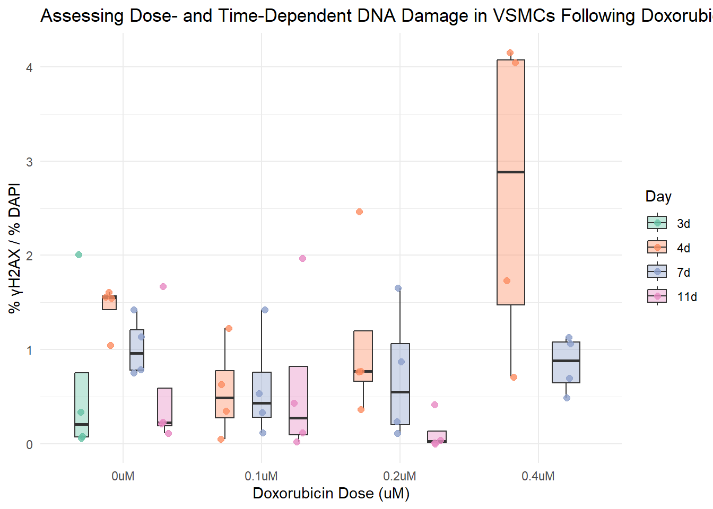
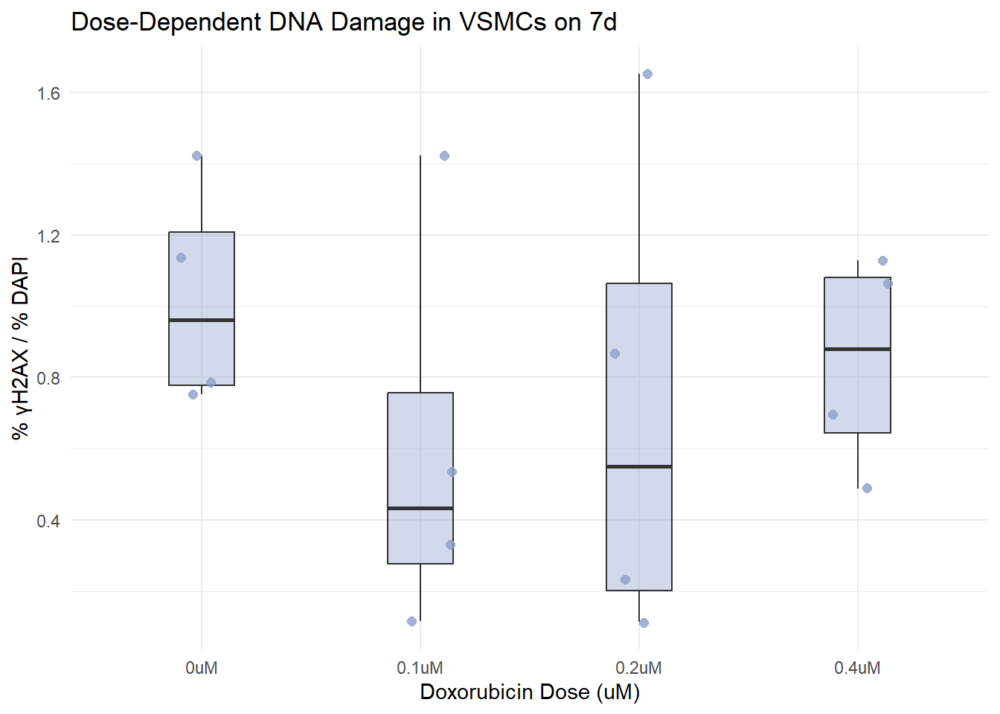

#setwd("C:/Users/kpipkin1/Documents/GitHub/kaitlyn/projects/DNA Damage in VSMCs")DNA Damage in VSMCs
Project Overview
The goal of this project is to assess the extent of DNA damage in vascular smooth muscle cells (VSMCs) following treatment with Doxorubicin. I will be using a data set that consists of 96 CSV files generated from ImageJ analysis. Each sample includes two channels: the DAPI (blue) channel, which stains cell nuclei, and the γH2AX (green) channel, an established marker of DNA damage. VSMCs were treated with Doxorubicin at four time points: days 3, 4, 7, and 11. VSMCs were also treated at different concentrations of Doxorubicin: 0 μM, 0.1 μM, 0.2 μM, and 0.4 μM. This study aims to determine the percentage of γH2AX signal normalized to nuclear area across different conditions to determine if there is any impact from dosage and duration on DNA damage.
Set the working directory
Load the necessary libraries
library(tidyverse)
library(gt)Read in all of the CSV Files
file_paths <- list.files(pattern = "\\.csv$", full.names = TRUE)In this code chunk, I am using Base R. My variable here is “file_paths”. This variable will contain a list of file names that I have stored in my current working directory. The “list.files” function searches for files in that current working directory. The “pattern=(2 back slashes).csv$” argument will allow for only the files that end in “.csv” to be included in my “file_paths” variable. This is because in regular expressions, a period means “any character” so we have to escape that with 2 backslashes to match to a period. Because the filename ends after csv, I use a dollar sign at the end of the pattern to indicate that csv is the end of the string so it will only pull files that end in .csv, not just a file that contains .csv. I use the “full.names=TRUE” peice to return the entire file path instead of just the file name itself. # Read all of the .csv Files into one Dataset
all_data<-file_paths %>%
set_names() %>%
map_dfr(read_csv, .id = "filename")My new variable here is “all_data”, which is where all of my file_paths are combined into one big data set. The file_paths%>% will start with the list of the .csv file paths and allow them to be piped in the next function, “set_names()”. This allows R to know which row came from which file. The “map_dfr(read_csv,.id=filename)” Makes R read each csv file in the list and combine all of the files together into one data frame. In addition, R then adds a new column to the big data frame called “filename”.The map_dfr function is from a package in tidyverse called purrr. dfr means data frame row bind.
Use File Names to Pull Metadata
all_data <- all_data %>%
mutate(
base_name = filename %>%
basename() %>%
str_remove(" \\(blue\\)| \\(green\\)") %>%
str_remove("-summary\\.csv$"),
day = str_extract(filename, "\\d+d"),
dosage = case_when(
str_detect(filename, "0\\.1uM") ~ "0.1uM",
str_detect(filename, "0\\.2uM") ~ "0.2uM",
str_detect(filename, "0\\.4uM") ~ "0.4uM",
str_detect(filename, "no doxo") ~ "0uM",
TRUE ~ NA_character_
),
channel = case_when(
str_detect(filename, "blue") ~ "blue",
str_detect(filename, "green") ~ "green",
TRUE ~ NA_character_
)
)The “mutate()” function adds new columns to the big dataset by extracting the information from the filename column. The basename column uses only the dosage, sample ID, and timepoint to help join files together later. The timepoint is extracted from the filename and matches to patterns listed in the file name which in this case is “11d” for example. By using “case_when()” you can add a column for dosage by finding patterns like “0.1uM” or “no doxo” and defining what they mean. The channel column is based on the fluorescence color also pulled from the filename. Both the mutate and case_when functions are from packages in tidyverse called dplyr and stringr.
Separate the Dataset into Blue and Green Channels
blue <- all_data %>%
filter(channel == "blue") %>%
select(base_name, day, dosage, Count, `Total Area`, `Average Size`, `%Area`, Mean) %>%
rename_with(~ paste0(., "_blue"), -c(base_name, day, dosage))
green <- all_data %>%
filter(channel == "green") %>%
select(base_name, Count, `Total Area`, `Average Size`, `%Area`, Mean) %>%
rename_with(~ paste0(., "_green"), -base_name)This code split my dataset into two tables: one with images from the blue channel and one with images from the green channel. Then I rename the measurment columns with the appropriate channel name to help join them later. The filter and rename_with functions are both from packages in tidyverse called dplyr.
Join Green and Blue Channel Images Together
combined <- inner_join(blue, green, by = "base_name")The “inner_join” function merges the blue and green data tables together based on their basename, which includes the dosage, timepoint, and sample ID. This function is from the dplyr package in tidyverse. The joining of these two datasets is a new varibale called “combined”.
Calculate the Percent of Green area (yH2AX) normalized to the Blue area (DAPI)
combined <- combined %>%
mutate(percent_gammaH2AX = (`%Area_green` / `%Area_blue`) * 100)Here, I add a new column called “percent_gammaH2AX to the”combined” dataset using the “mutate()” function. This column will divide the precent of the green area (the yH2AX signal, which measures DNA damage) by the percent of the blue area (DAPI signal, which measures the total nuclei). I then multiply this by 100 to get a percentage which gives me the normalized value that gives me the percent of DNA damage relative to the number of cells.
Clean Data
combined <- combined %>%
filter(!is.na(dosage), !is.na(percent_gammaH2AX), !is.na(day)) %>%
mutate(
dosage = factor(dosage, levels = c("0uM", "0.1uM", "0.2uM", "0.4uM")),
day = factor(day, levels = c("3d", "4d", "7d", "11d"))
) %>%
droplevels()In this step I remove any rows that do not have dosage, percent_gammaH2AX, or timepoints using “filter()”. Next, “mutate()” is used to convert the dosage and day columns into categorical variables and set them in ascending order. “droplevels” is then used to remove any dosage or day lables that were no longer used in my new filtered dataset. Drop levels, is.na, and factor are all functions in base R.
Pick Colors for the Plot
box_fill <- c(
"3d" = "#66c2a5", # green
"4d" = "#fc8d62", # orange
"7d" = "#8da0cb", # blue
"11d" = "#e78ac3" # pink
)Here I made a variable called “box_fil” where each day is assigned to a specific color using the “c()” function.
Generate a Combined Plot looking at the Percent of DNA Damage Across Dosage of Doxorubicin
ggplot(combined, aes(x = dosage, y = percent_gammaH2AX, fill = day)) +
geom_boxplot(position = position_dodge(width = 0.8), alpha = 0.4, width = 0.4, outlier.shape = NA) +
geom_jitter(aes(color = day),
position = position_jitterdodge(jitter.width = 0.2, dodge.width = 0.8),
size = 2, alpha = 0.8) +
scale_fill_manual(values = box_fill) +
scale_color_manual(values = box_fill) +
labs(
title = "Assessing Dose- and Time-Dependent DNA Damage in VSMCs Following Doxorubicin Treatment",
x = "Doxorubicin Dose (uM)",
y = "% γH2AX / % DAPI",
fill = "Day",
color = "Day"
) +
theme_minimal()
In this step, I am ready to graph so I will use the ggplot2 package in tidyverse. The “ggplot()” function creates a box plot. The “aes()” function maps dosage to the x axis and percent_gammaH2AX to the y axis and the boxes are filled based on their corresponding “box_fill” color. The “geom_boxplot()” function shoes the distribution f the values in each group and “geom_jitter() allows me to add the individual values. To make the individual points a darker color than their corresponding box_fill, I use”scale_fill_manual()” and “scale_color_manual()”. “labs()” allows me to name my title and axis lables. I used the “theme_minimal()”function to keep the plot clean and simple.
Plot by the Individual Days Separately
plot_day <- function(day_label) {
combined %>%
filter(day == day_label) %>%
ggplot(aes(x = dosage, y = percent_gammaH2AX)) +
geom_boxplot(fill = box_fill[day_label], alpha = 0.4, width = 0.3, outlier.shape = NA) +
geom_jitter(color = box_fill[day_label], width = 0.15, size = 2, alpha = 0.8) +
labs(
title = paste("Dose-Dependent DNA Damage in VSMCs on", day_label),
x = "Doxorubicin Dose (uM)",
y = "% γH2AX / % DAPI"
) +
theme_minimal()
}
plot_day("3d")plot_day("4d")plot_day("7d")
plot_day("11d")In this step I wrote a function called “plot_day()”. I then use the argument, “day_label” to create a boxplot showing DNA damage across Doxorubicin treatments on that specific day. this filters the combined data set to only include rows matching the day.
Make a Table of the Data set
combined %>%
gt() %>%
tab_header(
title = "DNA Damage in VSMCs",
subtitle = "% γH2AX / % DAPI by Doxorubicin Dose and Timepoint"
)| DNA Damage in VSMCs | |||||||||||||
|---|---|---|---|---|---|---|---|---|---|---|---|---|---|
| % γH2AX / % DAPI by Doxorubicin Dose and Timepoint | |||||||||||||
| base_name | day | dosage | Count_blue | Total Area_blue | Average Size_blue | %Area_blue | Mean_blue | Count_green | Total Area_green | Average Size_green | %Area_green | Mean_green | percent_gammaH2AX |
| 18-153,vsmcS31,11d,0.1uM doxo,H2AX-cy5 &BP153-RFP, 5-30-25 - 1.tif | 11d | 0.1uM | 26 | 65016 | 2500.615 | 4.724 | 255 | 8 | 20 | 2.500 | 1.000e-03 | 255 | 0.0211685013 |
| 18-153,vsmcS31,11d,0.1uM doxo,H2AX-cy5 &BP153-RFP, 5-30-25 - 2.tif | 11d | 0.1uM | 44 | 106516 | 2420.818 | 7.740 | 255 | 10 | 128 | 12.800 | 9.000e-03 | 255 | 0.1162790698 |
| 18-153,vsmcS31,11d,0.1uM doxo,H2AX-cy5 &BP153-RFP, 5-30-25 - 3.tif | 11d | 0.1uM | 37 | 79257 | 2142.081 | 5.759 | 255 | 24 | 343 | 14.292 | 2.500e-02 | 255 | 0.4341031429 |
| 18-153,vsmcS31,11d,0.1uM doxo,H2AX-cy5 &BP153-RFP, 5-30-25.tif | 11d | 0.1uM | 39 | 90836 | 2329.128 | 6.600 | 255 | 17 | 1788 | 105.176 | 1.300e-01 | 255 | 1.9696969697 |
| 18-153,vsmcS31,11d,0.2uM doxo,H2AX-cy5 &BP153-RFP, 5-30-25 - 1.tif | 11d | 0.2uM | 49 | 139405 | 2845.000 | 10.129 | 255 | 20 | 573 | 28.650 | 4.200e-02 | 255 | 0.4146510021 |
| 18-153,vsmcS31,11d,0.2uM doxo,H2AX-cy5 &BP153-RFP, 5-30-25 - 2.tif | 11d | 0.2uM | 41 | 116463 | 2840.561 | 8.462 | 255 | 3 | 18 | 6.000 | 1.000e-03 | 255 | 0.0118175372 |
| 18-153,vsmcS31,11d,0.2uM doxo,H2AX-cy5 &BP153-RFP, 5-30-25 - 3.tif | 11d | 0.2uM | 45 | 109486 | 2433.022 | 7.955 | 255 | 6 | 36 | 6.000 | 3.000e-03 | 255 | 0.0377121307 |
| 18-153,vsmcS31,11d,0.2uM doxo,H2AX-cy5 &BP153-RFP, 5-30-25.tif | 11d | 0.2uM | 71 | 154543 | 2176.662 | 11.229 | 255 | 1 | 1 | 1.000 | 7.266e-05 | 255 | 0.0006470745 |
| 18-153,vsmcS31,11d,no doxo,H2AX-cy5 &BP153-RFP, 5-30-25 - 1.tif | 11d | 0uM | 75 | 151008 | 2013.440 | 10.972 | 255 | 20 | 2512 | 125.600 | 1.830e-01 | 255 | 1.6678818812 |
| 18-153,vsmcS31,11d,no doxo,H2AX-cy5 &BP153-RFP, 5-30-25 - 2.tif | 11d | 0uM | 59 | 136027 | 2305.542 | 9.884 | 255 | 21 | 285 | 13.571 | 2.100e-02 | 255 | 0.2124645892 |
| 18-153,vsmcS31,11d,no doxo,H2AX-cy5 &BP153-RFP, 5-30-25 - 3.tif | 11d | 0uM | 108 | 213672 | 1978.444 | 15.526 | 255 | 18 | 237 | 13.167 | 1.700e-02 | 255 | 0.1094937524 |
| 18-153,vsmcS31,11d,no doxo,H2AX-cy5 &BP153-RFP, 5-30-25.tif | 11d | 0uM | 54 | 125110 | 2316.852 | 9.091 | 255 | 17 | 288 | 16.941 | 2.100e-02 | 255 | 0.2309976900 |
| 18-153,vsmcS31,3d,no doxo,H2AX-cy5 &BP153-RFP, 5-30-25 - 1.tif | 3d | 0uM | 18 | 36224 | 2012.444 | 2.632 | 255 | 4 | 26 | 6.500 | 2.000e-03 | 255 | 0.0759878419 |
| 18-153,vsmcS31,3d,no doxo,H2AX-cy5 &BP153-RFP, 5-30-25 - 2.tif | 3d | 0uM | 22 | 43956 | 1998.000 | 3.194 | 255 | 4 | 30 | 7.500 | 2.000e-03 | 255 | 0.0626174076 |
| 18-153,vsmcS31,3d,no doxo,H2AX-cy5 &BP153-RFP, 5-30-25 - 3.tif | 3d | 0uM | 24 | 53503 | 2229.292 | 3.888 | 255 | 52 | 1072 | 20.615 | 7.800e-02 | 255 | 2.0061728395 |
| 18-153,vsmcS31,3d,no doxo,H2AX-cy5 &BP153-RFP, 5-30-25.tif | 3d | 0uM | 28 | 44885 | 1603.036 | 3.261 | 255 | 9 | 145 | 16.111 | 1.100e-02 | 255 | 0.3373198405 |
| 18-153,vsmcS31,4d,0.1uM doxo,H2AX-cy5 &BP153-RFP, 5-30-25 - 1.tif | 4d | 0.1uM | 161 | 295536 | 1835.627 | 21.474 | 255 | 15 | 149 | 9.933 | 1.100e-02 | 255 | 0.0512247369 |
| 18-153,vsmcS31,4d,0.1uM doxo,H2AX-cy5 &BP153-RFP, 5-30-25 - 2.tif | 4d | 0.1uM | 277 | 364691 | 1316.574 | 26.499 | 255 | 82 | 4454 | 54.317 | 3.240e-01 | 255 | 1.2226876486 |
| 18-153,vsmcS31,4d,0.1uM doxo,H2AX-cy5 &BP153-RFP, 5-30-25 - 3.tif | 4d | 0.1uM | 278 | 355752 | 1279.683 | 25.849 | 255 | 58 | 2232 | 38.483 | 1.620e-01 | 255 | 0.6267167008 |
| 18-153,vsmcS31,4d,0.1uM doxo,H2AX-cy5 &BP153-RFP, 5-30-25.tif | 4d | 0.1uM | 251 | 382747 | 1524.888 | 27.811 | 255 | 36 | 1340 | 37.222 | 9.700e-02 | 255 | 0.3487828557 |
| 18-153,vsmcS31,4d,0.2uM doxo,H2AX-cy5 &BP153-RFP, 5-30-25 - 1.tif | 4d | 0.2uM | 67 | 26811 | 400.164 | 1.948 | 255 | 19 | 662 | 34.842 | 4.800e-02 | 255 | 2.4640657084 |
| 18-153,vsmcS31,4d,0.2uM doxo,H2AX-cy5 &BP153-RFP, 5-30-25 - 2.tif | 4d | 0.2uM | 120 | 142990 | 1191.583 | 10.390 | 255 | 33 | 524 | 15.879 | 3.800e-02 | 255 | 0.3657362849 |
| 18-153,vsmcS31,4d,0.2uM doxo,H2AX-cy5 &BP153-RFP, 5-30-25 - 3.tif | 4d | 0.2uM | 133 | 164072 | 1233.624 | 11.922 | 255 | 20 | 1248 | 62.400 | 9.100e-02 | 255 | 0.7632947492 |
| 18-153,vsmcS31,4d,0.2uM doxo,H2AX-cy5 &BP153-RFP, 5-30-25.tif | 4d | 0.2uM | 114 | 55295 | 485.044 | 4.018 | 255 | 27 | 430 | 15.926 | 3.100e-02 | 255 | 0.7715281234 |
| 18-153,vsmcS31,4d,0.4uM doxo,H2AX-cy5 &BP153-RFP, 5-30-25 - 1.tif | 4d | 0.4uM | 124 | 206077 | 1661.911 | 14.974 | 255 | 49 | 1456 | 29.714 | 1.060e-01 | 255 | 0.7078936824 |
| 18-153,vsmcS31,4d,0.4uM doxo,H2AX-cy5 &BP153-RFP, 5-30-25 - 2.tif | 4d | 0.4uM | 219 | 310034 | 1415.680 | 22.527 | 255 | 156 | 5362 | 34.372 | 3.900e-01 | 255 | 1.7312558263 |
| 18-153,vsmcS31,4d,0.4uM doxo,H2AX-cy5 &BP153-RFP, 5-30-25 - 3.tif | 4d | 0.4uM | 105 | 156177 | 1487.400 | 11.348 | 255 | 38 | 6317 | 166.237 | 4.590e-01 | 255 | 4.0447655975 |
| 18-153,vsmcS31,4d,0.4uM doxo,H2AX-cy5 &BP153-RFP, 5-30-25.tif | 4d | 0.4uM | 81 | 106998 | 1320.963 | 7.775 | 255 | 65 | 4450 | 68.462 | 3.230e-01 | 255 | 4.1543408360 |
| 18-153,vsmcS31,4d,no doxo,H2AX-cy5 &BP153-RFP, 5-30-25 - 1.tif | 4d | 0uM | 175 | 267772 | 1530.126 | 19.457 | 255 | 205 | 4308 | 21.015 | 3.130e-01 | 255 | 1.6086755409 |
| 18-153,vsmcS31,4d,no doxo,H2AX-cy5 &BP153-RFP, 5-30-25 - 2.tif | 4d | 0uM | 200 | 292800 | 1464.000 | 21.275 | 255 | 135 | 3052 | 22.607 | 2.220e-01 | 255 | 1.0434782609 |
| 18-153,vsmcS31,4d,no doxo,H2AX-cy5 &BP153-RFP, 5-30-25 - 3.tif | 4d | 0uM | 178 | 266800 | 1498.876 | 19.386 | 255 | 100 | 4127 | 41.270 | 3.000e-01 | 255 | 1.5475085113 |
| 18-153,vsmcS31,4d,no doxo,H2AX-cy5 &BP153-RFP, 5-30-25.tif | 4d | 0uM | 164 | 265752 | 1620.439 | 19.310 | 255 | 65 | 4138 | 63.662 | 3.010e-01 | 255 | 1.5587778353 |
| 18-153,vsmcS31,7d,0.1uM doxo,H2AX-cy5 &BP153-RFP, 5-30-25 - 1.tif | 7d | 0.1uM | 19 | 48911 | 2574.263 | 3.554 | 255 | 19 | 256 | 13.474 | 1.900e-02 | 255 | 0.5346088914 |
| 18-153,vsmcS31,7d,0.1uM doxo,H2AX-cy5 &BP153-RFP, 5-30-25 - 2.tif | 7d | 0.1uM | 36 | 70718 | 1964.389 | 5.138 | 255 | 15 | 231 | 15.400 | 1.700e-02 | 255 | 0.3308680420 |
| 18-153,vsmcS31,7d,0.1uM doxo,H2AX-cy5 &BP153-RFP, 5-30-25 - 3.tif | 7d | 0.1uM | 16 | 50292 | 3143.250 | 3.654 | 255 | 44 | 720 | 16.364 | 5.200e-02 | 255 | 1.4230979748 |
| 18-153,vsmcS31,7d,0.1uM doxo,H2AX-cy5 &BP153-RFP, 5-30-25.tif | 7d | 0.1uM | 24 | 71164 | 2965.167 | 5.171 | 255 | 11 | 85 | 7.727 | 6.000e-03 | 255 | 0.1160317153 |
| 18-153,vsmcS31,7d,0.2uM doxo,H2AX-cy5 &BP153-RFP, 5-30-25 - 1.tif | 7d | 0.2uM | 15 | 28537 | 1902.467 | 2.074 | 255 | 31 | 241 | 7.774 | 1.800e-02 | 255 | 0.8678881389 |
| 18-153,vsmcS31,7d,0.2uM doxo,H2AX-cy5 &BP153-RFP, 5-30-25 - 2.tif | 7d | 0.2uM | 15 | 41587 | 2772.467 | 3.022 | 255 | 16 | 96 | 6.000 | 7.000e-03 | 255 | 0.2316346790 |
| 18-153,vsmcS31,7d,0.2uM doxo,H2AX-cy5 &BP153-RFP, 5-30-25 - 3.tif | 7d | 0.2uM | 13 | 24485 | 1883.462 | 1.779 | 255 | 5 | 28 | 5.600 | 2.000e-03 | 255 | 0.1124227094 |
| 18-153,vsmcS31,7d,0.2uM doxo,H2AX-cy5 &BP153-RFP, 5-30-25.tif | 7d | 0.2uM | 12 | 25809 | 2150.750 | 1.875 | 255 | 33 | 433 | 13.121 | 3.100e-02 | 255 | 1.6533333333 |
| 18-153,vsmcS31,7d,0.4uM doxo,H2AX-cy5 &BP153-RFP, 5-30-25 - 1.tif | 7d | 0.4uM | 12 | 29685 | 2473.750 | 2.157 | 255 | 21 | 205 | 9.762 | 1.500e-02 | 255 | 0.6954102921 |
| 18-153,vsmcS31,7d,0.4uM doxo,H2AX-cy5 &BP153-RFP, 5-30-25 - 2.tif | 7d | 0.4uM | 12 | 35368 | 2947.333 | 2.570 | 255 | 37 | 401 | 10.838 | 2.900e-02 | 255 | 1.1284046693 |
| 18-153,vsmcS31,7d,0.4uM doxo,H2AX-cy5 &BP153-RFP, 5-30-25 - 3.tif | 7d | 0.4uM | 10 | 24595 | 2459.500 | 1.787 | 255 | 28 | 258 | 9.214 | 1.900e-02 | 255 | 1.0632344712 |
| 18-153,vsmcS31,7d,0.4uM doxo,H2AX-cy5 &BP153-RFP, 5-30-25.tif | 7d | 0.4uM | 11 | 16911 | 1537.364 | 1.229 | 255 | 11 | 89 | 8.091 | 6.000e-03 | 255 | 0.4882017901 |
| 18-153,vsmcS31,7d,no doxo,H2AX-cy5 &BP153-RFP, 5-30-25 - 1.tif | 7d | 0uM | 7 | 17509 | 2501.286 | 1.272 | 255 | 9 | 144 | 16.000 | 1.000e-02 | 255 | 0.7861635220 |
| 18-153,vsmcS31,7d,no doxo,H2AX-cy5 &BP153-RFP, 5-30-25 - 2.tif | 7d | 0uM | 10 | 20096 | 2009.600 | 1.460 | 255 | 6 | 145 | 24.167 | 1.100e-02 | 255 | 0.7534246575 |
| 18-153,vsmcS31,7d,no doxo,H2AX-cy5 &BP153-RFP, 5-30-25 - 3.tif | 7d | 0uM | 14 | 29994 | 2142.429 | 2.179 | 255 | 13 | 427 | 32.846 | 3.100e-02 | 255 | 1.4226709500 |
| 18-153,vsmcS31,7d,no doxo,H2AX-cy5 &BP153-RFP, 5-30-25.tif | 7d | 0uM | 16 | 27856 | 1741.000 | 2.024 | 255 | 10 | 311 | 31.100 | 2.300e-02 | 255 | 1.1363636364 |
In this final step, I am using the gt package to make a table of all of the combined data and analysis that I performed in all of the previous steps.